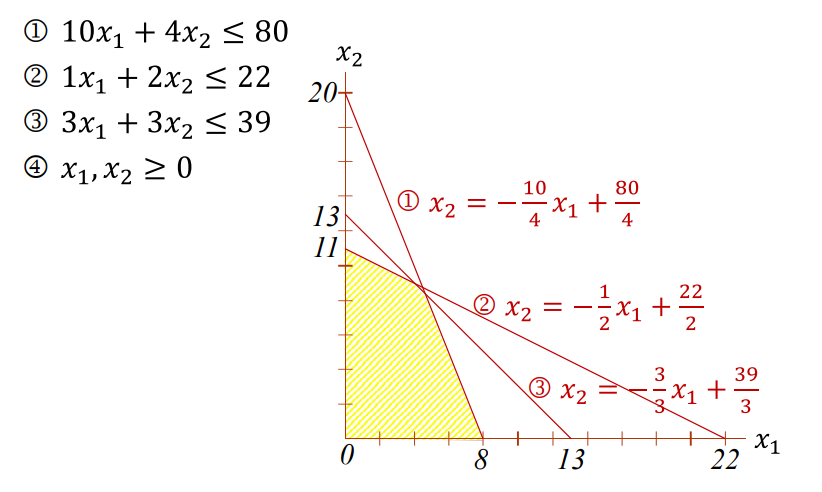
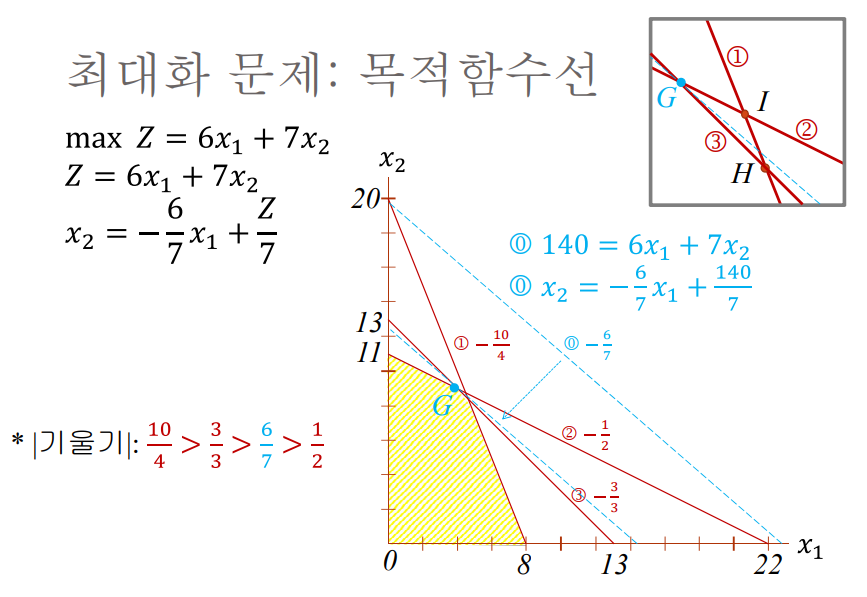

flowchart LR 문제해결 ----- 6 & 7 의사결정 ---- 1 & 2 & 3 & 4 & 5 문제해결 ---- 의사결정 subgraph a2[ ] 1["1.문제를 규명하고 정의한다."] 2[2.여러 문제해결 대안을 결정한다.] 3[3.대안을 평가할 기준을 결정한다.] 4[4.대안을 평가한다.] 5[5.가장 좋은 대안을 선정한다.] subgraph a1[" "] 6[6.선정된 대안을 실행한다.] 7[7.만족스런 해인지 결과를 평가한다.] end end
경영과학(OR)
경영과학 이해
경영과학(operations research)은 복잡하고 불확실한 환경에서 발생하는 경영의사결정 문제 분석과 해결을 위하여 합리적이고 체계적인 계량적 방법을 적용한 학문이다.
- 목적
-
- 여러 가지 모데과 기법들을 적용하여 경영자가 직면한 복작하고 불확실한 경영문제를 합리적이고 체계적으로 해결함으로써 좋은(옳은) 결정을 내릴 수 있도록 도와주는 것
- 특징
-
- 경영의사결정을 위한 과학적 방법 사용
- 문제해결을 위한 계량적, 객관적, 수학적 모델(model) 사용
- 문제해결을 위한 분석 도구(tool), 절차(algorithm), 기법(technique) 사용
경영과학은 경영과학(management science), 결정과학(decision science), 계량경영학(quantitative management), OR(operations research), 산업공학(industrial engineering) 등 유사 용어로 사용된다.
발전 과정
경영과학 발전 과정을 정리하면 다음과 같다.
- 1930년대 말 영국 군부에서 군사문제 해결을 위해 학제적 팀 적근법 사용
- 2차 대전 중 미국이 영국의 작전연구(operational research) 모방, 작전분석을 위해 팀 워크 구성
- 1947년, G.Dantzig 선형계획법 개발
- 대형 컴퓨터 개발로 경영 문제를 해결하는 학문분야로 자리 매김
- 2차 대전 이후 산업계에서 OR 기법 적용 시작
- 1960년대 대기행렬이론, 시뮬레이션 모델 개발
- 1970년대 이후 MIS와 결합하여 DSS 탄생
- 전문가 시스템, 인공지능 개발로 발전
특성
경영과학 특성은 다음과 같다.
- 경영의사결정에 관심
- 과학적 방법
- 시스템적 접근 방법
- 학제적 팀워크
- 수학적 모델 사용
- 컴퓨터 활용
의사결정과 문제해결
문제해결(problem solving)은 원하는 결과와 실제 결과 사이에 존재하는 차이를 규명하고 이 차이를 해결할 조치를 취하는 과정(process)이다. 의사결정(decision making)은 문제를 정의하고, 대안을 결정하고, 결정 기준을 마련하고, 대안을 선정하는 과정이다.
의사결정 과정에는 질적분석과 수리적 분석이 있다.
- 질적 분석(qualitative analysis)
-
- 대안을 평가할 때 경영자 경험이나 판단력 같은 기예(art)에 의존하는 방법
- 수리적 분석(quantitative analysis)
-
- 대안을 평가할 때 계량적 자료와 수학적 모델 및 기법을 사용하는 방법
경영자는 더 좋은 경영문제 해결을 위해 질적 분석과 수리적 분석을 결합하여 사용한다.
flowchart LR subgraph g1[문제 구성] direction LR 문제정의 ---> 대안결정 ---> 기준결정 end subgraph g2[문제 분석] 기준결정 ---> 질적분석 & 수리적분석 ---> 요약평가 ---> 의사결정 end
과학적 방법
과학적 방법(scientific method)은 17세기 이후 자연과학에 의해 정형화된 계획적 관찰, 측정, 실험, 일반화, 시험 및 가설 변경 등의 과정으로 이루어진 방법을 뜻한다.
과학분야에 따라 과정이 동리하지는 않으나 현상을 설명하는 가설을 수립하고 이 가설에 의한 예측이 들어 맞는지 검증하기 위해 실험 설계 과정이 반드시 포함된다. 과학적 방법을 통하여 얻은 지식은 경헙적이며 귀납적인 것으로 반증 가능성이 언제나 존재한다. 과작 발전에 따라 과학 지식은 그 의미와 내용이 변할 수 있기 때문이다.
과학적 방법 특징은 다음과 같다(F.N. Kerlinger, 1986).
- 문제 해결은 상식적 접근보다 논리적 접근을 통해 이루어진다.
- 이론이나 가설은 체계적이고 경험적으로 검증된다.
- 체계적이고 표준화된 관찰이나 실험은 통제를 통해 이루어진다.
- 사상 체계나 상호관계가 객관성 있고 타당성 있게 설명된다.
- 문제에 대한 연구자 관심 정도에 따라 과학적 방법의 의미가 달라질 수 있다.
flowchart LR subgraph g1[의사결정과정] 11[문제정의] 12[대안설정] 13[대안평가] 14[의사결정] end subgraph g2[과학적방법] 21[문제정의] 22[가설설정] 23[실험 설계와 실행] 24[가설 채택 또는 기각] end 11 ---> 21 12 ---> 22 13 ---> 23 14 ---> 24
시스템적 접근
경영과학 특성 중 하나는 시스템적 접근 방법이다.
- 시스템
-
- 특정 목적을 달성하기 위하여 구성되는 상호 관련된, 독립적인 부분(하위 시스템, subsystem)의 전체(모임, 집합)
- 하위 시스템도 시스템
- 시스템적 접근 방법
-
- 전체 시스템 관점에서 하위 시스템 문제를 해결하는 것
- divide and conquer
- 최적화(optimization)
-
- 전체 최적화(global optimization)
- 전체 시스템 목적에 부합하는 해(global optimum)을 찾는 것
- 부분 최적화(sub optimization)
- 어느 하위 시스템 목적에는 부합하지만 전체 시스템 목적에는 부합하지 못하는 해(local optimum)를 찾는 것
- 전체 최적화(global optimization)
수학적 모델
모델(model, 모형)은 실제 세계 특정 현상이나 실체를 단순하게 요약하여 표현한 것이다. 문제를 기술하고 표현하는 모델화(modelling, 모형화)는 여러 가지 혜택도 주지만동시에 위함도 따르므로 현실 문제에 대한 통찰력이 필요하다. 또한 모든 모델은 가정을 수반하게 된다.
- 가정(assumption)
-
- 가정을 세우면 실제 문제 복잡성을 감소시켜 단순화 하는데 도움이 됨
- 단순화 vs. 정확성
좋은 모델이란 모델이 표현하고자 하는 실체 핵심을 문제 해결 관점에서 단순하면서도 정확하게 나타낸 것이다.
모델 종류는 다음과 같다.
flowchart TB
0[모델종류]
1["형상모델"]
2["상사모델"]
3["수학적 모델"]
0 --- 1 & 2 & 3
- 형상모델 (iconic model), 또는 축적 모델 (scale model)
-
- 물리적으로 확대 또는 추곳한 원형 복사판
- 장난감, 사진, 생산라인 등
- 상사모델 (analog model)
-
- 실제 시스템처럼 기능하는 모델
- diagram, 조직표, 청사진, 속도계, 온도계 등
- 수학적 모델 (mathematical model)
-
- 실제 문제를 수학적 기호를 사용하여 방정식이나 수학적 설명 등을 함수적 관계로 표현한 모델
- 장점
- 문제 이해를 돕는다.
- 다양한 수학적 해결 절차를 적용할 수 있게 해 준다.
- 실행하는 시스템에서 일을 하는 사람에게 해를 만들 수 있도록 도와 준다.
수학적 모델 구성 요소는 다음과 같다.
flowchart LR subgraph sg1["수학적 모델 구성요소"] 구성요소 --- 변수 & 상수 변수 --- 독립변수 & 종속변수 독립변수 --- 결정변수 & 외생변수 end
- 변수(variable)
-
- 시간이나 조건에 따라 값이 변할 수 있는 것
- 독립변수(independent variable)
- 다른 변수에 영향을 받지 않는 변수
- 결정변수(decision variable), 통제가능변수(controllable variable) - 의사결정자가 자의적으로 변경할 수 있는 변수 - 총비용, 총수입 등
- 외생변수(exogenous variable), 통제불가능변수(uncontrollable variable) - 의사결정자가 자의적으로 통제할 수 없어 주어지는 대로 받아 들이는 변수 - 이자율, 사망률, 경쟁제품 가격 등
- 종속변수(dependent variable), 기준변수(criterion variable)
- 독립변수 값에 영향을 받는 변수
- 총이익
- 상수(constant), 매개변수(parameter)
-
- 시간이나 조건에 따라 변하지 않고 고정된 값
- 원주율, 자연로그 등
수학적 모델 분류는 다음과 같다.
flowchart TB 0[수학적 모델] subgraph g1[" "] 11[규범적 모델] 12[서술적 모델] end subgraph g2[" "] 21[확정적 모델] 22[확률적 모델] end subgraph g3[" "] 31[분석적 모델] 32[시뮬레이션 모델] end 0 --- g1 & g2 & g3
- 규범적 모델과 서술적 모델
-
- 규범적 모델 (normative model), 최적화 모델 (optimization model)
- 의사결정자가 특정 목적을 가장 효율적으로 달성하기 위해서 취해야 하는 행위를 규정(prescribe)하는 모델
- 규범적 모델은 최적해 (optimal solution)를 구하기 위하여 사용
- 선형계획법, 네트워크 모델, 수송 모델, 동적 계획법 등
- 서술적 모델 (descriptive model)
- 의사결정이 실제로 어떻게 이루어지는가를 기술(describe)하는 모델
- 여러 대안 결과, 즉 시스템 성과 또는 효과성을 조사하기 위하여 사용하며, 만족해(satisficing solution)를 제공함
- 대기행렬, 마이코브 분석, 시뮬레이션 모델 등
- 규범적 모델 (normative model), 최적화 모델 (optimization model)
- 확정적 모델과 확률적 모델
-
- 확정적 모델 (deterministic model)
- 통제불능변수 값을 사전에 확실히 알고 사용하는 모델
- 선형계획법, 수송모델 등
- 확률적 모델 (probabilistic model)
- 통제불능변수 값이 불확실하고 변동하는 경우에 사용하는 모델
- 재고관리 모델, 대기행렬 모델, 시뮬레이션 모델 등
- 확정적 모델 (deterministic model)
- 분석적 모데과 시뮬레이션 모델
-
- 분석적 모델 (analytic model)
- 반복적 연산절차나 일반해 공식을 사용하는 모델
- 선형계획법, 재고관리 모델 등
- 시뮬레이션 모델 (simulation model)
- 해가 연역적으로 구해지는 것이 아니고 어떤 조건 하에서 모델에 통제가능한 변수 특정값을 대입하여 종속변수에 미치는 영향을 관참함으로써 실험하는 모델
- 슈퍼마켓 계산대 수가 고객 도착률에 따라 총비용에 미치는 영향 실험 등등
- 분석적 모델 (analytic model)
의사결정 도구
flowchart TD 0[의사결정 도구] subgraph s1[불확실성 하 미래예측] direction LR 11[의사결정론] 12[의사결정나무] 13[몬테카를로 시뮬레이션] 14[마코프 체인 분석] end subgraph s2[여러 가지 대안 평가] direction LR 21[손인분기점 평가] 22[선호도 행렬] 23[선형/비선형 계획법] 24[AHP/ANP] end subgraph s3[상호 영향] direction LR 31[게임이론] end 0 --> s1 & s2 & s3
불확실성 하에서의 의사결정
어떠한 사건에 대해 과거 경험이 전무하여 발생 가능확률이 알려지지 않아거나 미래에 대한 확실한 근거를 가지고 예측하기 매우 어려운 경우에 이루어지는 의사결정으로 경영활동 상 대부분이 이 경우에 해당된다.
의사결정론
의사결정론에 있어 의사결정이란 무엇을 어떻게 결정해야 하느냐에 대한 물음에 답하는 것으로 의사결정자가 선택할 행위가 복수개여야 한다. 참고로, 관리 불가능 변수란 의사 결정권자 결정과는 관계없이 의사결정 결과에 영향을 주는 요소를 의미한다.
불확실한 상황 하에서의 의사결정은 선택 가능한 대안, 발생 가능성, 여러 상황에 있어 각 대안들 간 수익성 그리고 알려지지 않은 여러 상황들의 발생 확률 속에서 의사결정자 성향이나 의사결정 상황에 따라 기준이 마련된다.
- 최대최소(Maximin, Wald) 기준
-
- 비관적인 관점에서 미래 수요가 낮은 것을 선택
- 미래에 대해 비관적인 예측에 준해 의사결정한 최악의 대안 중 가장 좋은 결과를 보상해 주는 대안을 선택
- 안전제일 주장으로 각 상황별로 손실이 가장 작은 경우를 의사결정 기준으로 삼음
- 최대최대(Maximax) 기준
-
- 최대로 낙관적인 수익을 예상하며 미래 수요가 높은 것을 선택
- 미래에 대해 낙관적인 예측에 준해 의사결정한 대안 중 가장 좋은 결과를 보상해 주는 대안을 선택
- 라플라스(Laplace, Equal; Likeihood) 기준
-
- 가중평균 보상이 가장 좋은 것을 선택
- 미래를 정확히 예측할 수 없기 때문에 모든 상황이 동일한 확률로 발생한다는 가정(사건이 n가지일 경우 각 사건 비중은 1/n 임)하에 각 대안별로 기댓값을 계산하여 가장 좋은 값을 갖는 대안을 선택
- “불충분 이유 원칙”이라고 하며 각 상황에 따른 평균을 의사결정 기준으로 삼음
- 최소최대후회(Minimax Regret, 세비지 Savage) 기준
-
- 최악의 후회(최소 투자를 하였는데 수요가 많은 경우)가 가장 작은 대안을 선택
- 최대후회 최소화(minimax, savage) 원칙은 의사결정자가 자기 행동 결과를 후회하지 않으려 하며 적어도 의사결정에서 오는 최대 후회를 최소화 하려고 하는 가정에 근거
- 결과표를 후회표(주어진 사건 하에서 최선 대안안인 최대치에서 해당 값을 빼주어 얼마나 손해 보는가를 나타냄)로 전환하여 그 중 가장 작은 값을 가지는 대안 선택
- - 후르비치(Huwicz) 기준
-
- 최대최대원책과 최대최소원칙의 가중평균
- 대부분 의사결정자는 현실적으로 극단적으로 비관적 또는 낙관적 기준이 아닌 중간 어느 지점을 선택함
- 비관주의와낙관주의를 절충하기 위해서 의사결정자가 으느 정도 미래에 대한 낙관적인 견해를 가지고 있는 정도를 나타내는 낙관지수(\(\alpha\))를 가중치로 사용하며 이 지수는 0 ~ 1 사이 값을 가지고 낙관지수가 0일 때는 의사결정자가 자연 결과에대해 비관적(최대최소원칙)이며, 반면 1일 때는 자연에 대낙관적(최대최대)이라는 것을 의미함
선형계획법
::: {callout-tip title=“기출” icon=false} 97-2-5 :::
선형계획법(linear programming, LP)은 선형(linearity) 조건이 갖추어진 수리계획법으로 변수 간 함수적 관계가 직선으로 표현된다.
- 수리계획법(mathematical programming)
-
- 의사결정자가 실현하고자 하는 목적을 최적화(최대화 또는 최소화)하고자 문제를 모델화해서 그 해결 절차에 따라 최적해를 찾아내려는 과정
- programming은 계획한다(planning) 또는 최적화 한다(optimizing)를 의미
일반적인 선형계획 모델 구조는 다음과 같다.
\[ \begin{align} max/min \ Z = C_1x_1 + C_2x_2 + ... + C_nx_n \end{align} \tag{28.1}\]
\[ \begin{align} \\subject \ to \\ a_{11}x_1 \ + \ a_{12}x_2 \ + \ ... \ a_{1_n}x_n \ \le \ b_1 \\ a_{21}x_1 \ + \ a_{22}x_2 \ + \ ... \ a_{2_n}x_n \ \le \ b_2 \\ ... \\ a_{m1}x_1 \ + \ a_{m2}x_2 \ + \ ... \ a_{m_n}x_n \ \le \ b_m \\ \end{align} \tag{28.2}\]
\[ \begin{align} where \ x_1 \ge 0, \ x_2 \ge 0, \ , \ ... \ , \ x_n \ge 0 \end{align} \tag{28.3}\]
일반 구조 구성요소는 다음과 같다.
- 결정변수(decision variable)
-
- \(x_1, x_2, ..., x_n\)
- 기업이 수행하는 활동 수준을 나타내는 기호
- 제품 1 생산량, 제품 2 생산량 등
- 아직 알지 못하는 변수 양을 나타내는 기호
- 목적함수(objective function)
-
- 위 수식 (28.1)
- 의사결정자가 달성하고자 하는 목적을 최대화(maximize) 또는 최소화(minimize)하려는 선형 함수식
- 최대화: 이익, 수입, 시장점유율, 투자수익 등
- 최소화: 비용, 시간, 거리 등
- 제약조건(constraint)
- 매개변수
-
- 계수(coefficient)
- 목적함수 계수(objective function coefficient): \(C_1, C_2, ..., C_n\)
- 기술 계수(technology coefficient), 투입-산출계수(input-output coefficient): \(a_{11}, a_{12}, ..., a_{mn}\)
- 우변상수(right hand side value): \(b_1, b_2, ..., b_m\)
- 계수(coefficient)
최대화 모델 예제
평화전자(주) 제품배합(product mix) 문제로, 두 종류 모델을 생산 판매한다. 생산 공정은 조립, 검사, 창고 저장이며 제약 조건은 아래 표와 같다. 이익을 최대화 하기 위해 하루에 각 모델을 얼마씩 생산해야 하는가? 1
| 공정 | 모델1 | 모델2 | 자원 |
|---|---|---|---|
| 조립(시간/대) | 10 | 4 | 80 |
| 검사(시간/대) | 1 | 2 | 22 |
| 저장공간(\(ft^3\)/대) | 3 | 3 | 39 |
| 이익(만원/대) | 6 | 7 |
- 결정변수
-
\(x_1\) : 모델1 생산량(대/일)
\(x_2\) : 모델2 생산량(대/일)
- 목적함수
-
- \(max Z = 6x_1 + 7x_2\)
- 제약조건
-
\(10x_1 + 4x_2 \le 80\) : 조립조건
\(1x_1 + 2x_2 \le 22\) : 검사조건
\(3x_1 + 3x_2 \le 39\) - 저장조건
- 비음조건
-
- \(x_1 \ge 0, \ x_2 \ge 0\)
완전한 모델로 표기 하면 다음과 같다.
\[ \begin{aligned} max \ Z = 6x_1 + 7x_2 \\ \\ s.t. \\ 10x_1 + 4x_2 \le 80 \\ 1x_1 + 2x_2 \le 22 \\ 3x_1 + 3x_2 \le 39 \\ \\ x_1 \ge 0, \ x_2 \ge 0 \end{aligned} \]
최적해를 구하는 방법
선형계획 모델 최적해는 구하는 방식은 다음과 같다.
- 그래프 방법
- 심플렉스 법
- Ellipsoid algorithm
- Projective algorithm of Karmarkar
그래프 방법으로 최적해를 구하면 다음과 같다.


위 연립방정식을 풀면 \(x_1 = 4\), \(x_2 = 9\)를 갖는다. 즉 모델1 생산량은 4, 모델2 생산량이 9일 때 \(Z = (6 \times 4) + (7 \times 9) = 87(만원)\)을 갖게 된다.
분석적 계층화 과정 (AHP)
기출
#97-1-3
분석적 계층화 과정(AHP, Analytic Hierarchy Process)는 Thomas L. Saaty 교수가 1970년대 창안한 다기준 의사결정방법론이다.2
AHP 원리
인간이 의사결정 시 두뇌가 단계적 또는 위계적 분석 과정을 활용한다는 사실에 착안하여 개발되었다. 연구 결과에 따릅면 사람은 문제를 해결할 대 다음 세가지 원칙을 따른다.
- 계층적(hierarchy) 구조 설정
- 상대적 중요도(weight) 설정
- 논리적 일관성 (logical consistency) 유지
계층적 구조 설정 > 인간은 복작한 현상을 그 구성요소 별로 나아가 더 작은 부분으로 나누어 종국적으로 계층 구조를 설정한다. 가장 기본적으로 맨 윗부분은 목적(goal)을 두고, 그 밑에 판단기준이 되는 기준(criteria)을, 그리고 가장 아래 계층에 대안(alternatives)을 두는 구조이다. 판단기준은 분석 대상에 따라 하위 계층을 두어 복잡한 구조를 가질 수도 있다.
상대적 중요도 설정 > 인간은 관측한 사물 사이의 관계를 인식하고 유사한 사물들을 짝으로 묶어 특정 기준에 대하여 비교하고 그 짝의 구성 인자 사이의 선호도를 판단하는 능력을 소유하고 있다. 최종적으로 상상이나 논니적 과정을 통하여 그들이 내린 판단을 종합하여 전체 시스템에 대한 이래를 보다 강화한다. AHP 특징은 많은 의사결정 요소 간 가중치 또는 중요도(weight)를 간단한 쌍대비교(1:1)를 통해 산출해 내는데 있다.
논리적 일관성 유지 > 인간은 사물이나 생각을 논리적 일관성을 갖도록 관계를 설정하는 능력을 갖고 있다. 일관성은 두 가지 이미를 갖는데 유사한 사물이나 생각을 동질성이나 관련성에 따라 묶는 것과 특정한 기준이 있을 경우 생각이나 사물 간 강약을 기준에 따라 논리적인 방법으로 구성한다는 것이다.
4가지 공리
기본적인 4가지 공리는 다음과 같다.
flowchart TB 가[4가지 공리] 가 --- 나0[상호비교] & 나1[동질성] & 나2[독립성] & 나3[기대성]
- 상호비교(reciprocal comparison)
-
- 의사결정자의 두 대상에 대한 상호 비교가 반드시 가능해야 하며 중요성 정도를 나타낼 수 있어야 한다. 이 중요성 정도는 반드시 역조건을 성립시켜야 한다. 즉 A가 B보다 x배 중요하다면 B는 A보다 (1/x)배 중요시되어야 한다.
- 동질성(homogeneity)
-
- 중요성 정도는 한정된 범위 내 정해진 척도를 통해 표현되어야 한다. 즉 비교대상 간 비교 가능한 일정한 범위를 갖는 기준들이 존재해야 한다.
- 독립성(independence)
-
- 상대적 중요도를 평가하는 동일 수준 요인들은 특성이나 내용 측면에서 서로 관련성이 없어야 한다.
- 기대성(expectation)
-
- 계층구조는 의사결정에 필요한 모든 사항들을 완전하게 포함하는 것을 가정한다. 즉 위사결정자의 합리적 기대에 부합하는 완전한 계측구조를 갖고 있어야 한다. 반면 수준 수가 많아 계층 구조가 깊으면 계산상 복잡성을 유발시키므로 일반적으로 3-7 수준으로 계층을 형성한다.
각 공리는 이론적 또는 실제 이용 측면에서 타당성을 가지기 위해 필요하다. 그 근거는 다음과 같다.
상호비교 위배는 모호한 질문 때문에 의사결장가 질문을 이해하지 못하는 경우 발생한다. 판단이나 상대비교를 이끌어 내는데 사용되는 질문이 명백하지 않거나 질문이 올바르게 언급되지 않았다면 쌍대비교가 성립될 수 없다는 것을 의미한다.
동질성을 만족하지 못한다면 비교되는 요소는 동일하지 못하게 되어 쌍대비교가 성립할 수 없다. 즉, 동질성이란 비교 대상들이 비교 가능하다는 것을 의미한다.
독립성은 판단 기준 가중치가 고려되는 대안들과 독립적이어야 한다는 의미이다. 특정 대안 선택에 유리한 가중치 산출을 피애야 하며 두 기준을 쌍대비교할 때 상위 수준 요소만을 고려해야 한다.
기대성을 만족하지 못한다면 의사결정자는 자신의 합리적 기대를 맞추는 데 필요한 모든 대안이나 모든 판단기준을 사용하지 않는 것이다. 즉, 의사결정이 불완전하게 이루어져 기대를 반영하지 못하게 된다.
분석 과정
AHP 분석은 다음과 같은 가정을 따른다.
- 문제설정 및 계층적 구조화
- 문제별 쌍대비교 단계
- 가중치 산정 및 일치성 분석
flowchart TB subgraph 목표 0[스마트폰 구입] end subgraph 평가기준 11[디자인] 12[가격] 13[성능] 14[서비스] end subgraph 대안 21[삼성] 22[샤오미] 23[애플] end 0 --- 11 & 12 & 13 & 14 11 --- 21 & 22 & 23 12 --- 21 & 22 & 23 13 --- 21 & 22 & 23 14 --- 21 & 22 & 23
문제설정 및 계층적 구조화 > 스마프폰 구입을 위해 디자인, 가격, 성능, 서비스를 판가기준으로 3개 제품을 중 선택하고자 한다.
- 문제별 쌍대비교
- 가중치 산정 및 일치성 분석
분석 네트워크 프로세스 (ANP)
분석 네트워크 프로세스(ANP, Analytic Network Process)는 AHP 분석 한계로 인해 1996년 Saaty 교수가 기존 AHP 기법을 보완하여 개발되었다. AHP는 구성요소간 독립성을 가정하였지만 현실에서는 수평적 상호관계, 수직적 종속관계가 존재하기 때문에 단순한 계층적 구조만으로 설명할 수 없는 경우가 있다. ANP는 AHP 기법에 기초를 둔 시스템으로 요소간 비선형 관계를 모델화하는 복작한 의사결정을 다룰 수 있다.
| 구분 | AHP | ANP |
|---|---|---|
| 구조 | 트리 구조 | 네트워크 구조 |
| 가정 | 각 구성 요소 간 상호 독립 | 각 구성 요소 간 상관관계 존재 |
| 특징 | 단방향 흐름, 계산이 비교적 단순 | 상호 종속성, 피드백 효과, 계산이 복작하여 시간 과다 소요 |
의사결정 나무
기출
#97-3-3
의사결정 나무(decision tree) 기법은 의사결정이 단계별로 연속적으로 이루어지는 경우에 사용할 수 있는 분석 기법으로 1964년 매기(J.F. Magee)에 의해 제기되었다. 생산규모 확장 시기 결정에 이용되는 확률적 기법으로 의사결정에서 고려되는 대체안 구조를 여러 갈래 가지와 마디를 작고 있는 나무 모양으로 나타낸 방식이다.
수요가 불확실하고 순차적으로 여러 의사결정을 내려야 하는 다양한 경우를 평가하는데 유용하다.
작성방법
아래 기호를 이용하여 도식화 한다.
- (□) 사각형 결정 마디
-
- 어떤 결정이 필요한 상태를 나타내는 의사결정 지점
- (○) 원형 사건 마디
-
- 의사결정 선택과 상황 간 결과를 설명하는 상황 발생점
- (ㅡ) 가지
-
- 의사결정 또는 상황 발생점에서 뻗어 나온 가지로 의사결정 대안ㅇ을 표시하기도 하고 선택과 상황이 이루어질 때 다양한 결과를 의미하기도 함
작성 절차는 다음과 같다.
- 사건 마디에 대해 각 사건 가지 보상과 확률을 곱하고 이들을 모두 더하여 사건 마디 기대 보상을 계산
- 상황 발생점에서는 상황 발생점에서 뻗은 가지에 있는 미래상황 발생 확률과 성과를 곱한 결과 합을 기입하고 이를 위치 값이라하며 상황 발생점 왼쪽에서 빧어 나온 가지의 성과가 됨
- 결정 마디에선 기대 보상이 가장 높은 대안을 선택
- 의사결정 시 각 대안 위치 값을 비교하여최선 대안을 선택하여 기입
예제 28.1 (공장관리기술사 97회 3교시 문제3) 신제품을 생산할 공장의 신설을 검토하고 있다. 신제품은 앞으로 10년간 계속 판매될 것으로예상되는 수요가 높은 확률은 60%, 낮은 확률은 40%로 예측되었다. 이러한 상황에서공장규모를 대규모로 할 것인지의 전략을 결정하고자 한다. 시설투자를 대규모로 할 경우 2억 원, 소규모로 할 경우에는 1억 원이 필요하며, 시설물들에 대한 10년 후 잔존가치는 없다. 수익은 대규모시설에서 수요가 높으면 10년간 매년 9,000만 원, 대규모시설이나 수요가낮으면 1,000만 원이다. 소규모시설 시 수요가 높으면 4,000만원, 수요가 낮으면 5,000만 원이다. 어떤 전략이 유리한지 결정하고자할 때 디시전트리(Decision Tree)를 사용하여 작성하고, 기대수익을 계산한 후 유리한 전략을 선정하시오.
위 예제(28.1)를 도식화 하면 아래와 같다.
flowchart LR 가[공장 투자 전략] -- 투자 2억<br>수익 3.8억 --- 나1((대규모 투자<br>5.8억 원)) 가[공장 투자 전략] x-- 투자 1억<br>수익 3.4억 --- 나2((소규모 투자<br>4.4억 원)) 나1 -- 수요 높음, 0.6 --- 다1[0.9억 원/년] 나1 -- 수요 낮음, 0.4 --- 다2[0.1억 원/년] 나2 -- 수요 높음, 0.6 --- 다3[0.4억 원/년] 나2 -- 수요 낮음, 0.4 --- 다4[0.5억 원/년]
대규모 투자에 대한 기대수익은 다음과 같이 계산이 된다.
\[(0.6 \times 0.9억 원 + 0.4 \times 0.1억 원) \times 10년 = 5.8억 원/년\]
소규모 투자에 대한 기대수익도 같은 수식으로 계산하면 4.4억 원/년이다.
따라서 투자비를 고려한 기대수익은 대규모투자 시 3.8억, 소규모투자 시 3.4억이므로대규모 투자가 유리한 전략이다.
대기행렬이론
대기행렬이론(Queueing Theory)은 고객과 서비스 시설 간 관계를 확률 이론을 적용하여 모형을 작성하고 고객 도착 상황에 대응할 수 있는 경제적 규모를 결정하고자 하는 의사결정 기법이다. 총 대기 비용을 최소화시키는 최적 서비스 시설 결정을 위한 기법으로 대기행렬 분석에 따라 프로세스 설계, 용량 계획, 프로세스 성과가 달라지게 된다.
다음과 같은 경우 대기행렬이 생기거나 서비스 시설이 휴지상태에 이르게 된다.
- 불규칙한 고객 요구(도착)
- 서비스 능력 크기
- 수요와 서비스 시스템 간 일시적인 불균형
대기행렬 현상은 다음과 같다.
- 은행이나 병원에서 차례를 기다리는 고객
- 생산 공장에서 수리를 기다리는 고장 난 기계
- 재료나 일감 공급을 기다리는 작업공정
대기행렬 분석 목적은 고객 도착 상황에 잘 대응할 수 있는 능력 내지 규모를 경제적으로 결정하여 서비스 비용을 최소화 하는데 있다.
대기행렬 시스템 기본 구조는 다음과 같다.
- 고객(도착지, Input) - 서비스를 받으러 오는 시스템 투입물
- 서버(Server), 서비스 시설 - 서비스를 수행하는 주체로 어떤 서비스를 정해진 순서나 규칙에 따라 제공
- 서비스(Output) - 고객(도착지)에게 제공되는 산출물
- 모집단 크기 - 서비스를 요구하는 잠재 고객 수
대기행렬 가정
대기행렬 이론 가정은 다음과 같다.
- 고객 수 분포
-
- 시간당 고객 도착 수는 포아송 분포를 따른다.
- 서비스 시간 분포
-
- 고객이 도착하는 시간 간격은 지수 분포를 따른다.
단일경로 단일과정 대기행렬 시스템일 경우 대기행렬 평균 길이는 다음과 같이 계산된다.
\[ 대기행렬 \ 평균길이 \ L_q \ = \ \frac{\lambda^2}{\mu(\mu - \lambda)} \] 여기서 \(\lambda\)는 단위시간 동안 도착하는 평균 고객 수이고, \(\mu\)는 단위시간 동안 서버 1명에게 서비스를 제공받는 평균 고객 수이다.
대기행렬 모형
- M/M/1
-
- M: 고객도착 시간 간격으로 포아송 분포를 따른다.
- M: 서비스 시간 간격으로 지수 분포를 따른다.
- 1: 단일경로 단일과정 시스템으로 서비스 시설은 하나다.
리틀(Little) 공식
시스템 선능척도 간 관계식을 정의한 공식으로 \(L\), \(L_q\), \(W\), \(W_q\) 중 하나만 알고 있어도 나머지 세 값을 구할 수 있다. 즉, \[ \bar\lambda = \sum^\infty_{n=0} \lambda_nP_n이라고 \ 할 \ 때 \\ L = \bar\lambda \\ L_q = \bar\lambda W_q \\ W = W_q + \frac{1}{\mu} \] 로 계산할 수 있다.
투자안 평가
투자안으로부터 예상되는 미래 현금흐름과 자본비용을 알고 잇다고 가정할 때 각 투자안이 기업 가치 증가에 어느정도 공헌하는지에 따라 투자안 경제성을 평가한다. 미래 현금 흐름을 고려 유무에 따라 전통적인 분석방법과 현금흐름할인법(DCF, discounted cash flow)으로 구분할 수 있다.
flowchart TB 0[경제성 평가방법] 11[전통적 분석방법] 12[현금흐름할인방법] 21[회수기간법] 22[회계적이익률법] 23["순현가법(NPV)"] 24["내부수익률법(IRR)"] 0 --- 11 & 12 11 --- 21 & 22 12 --- 23 & 24
전통적 분석방법
전통적 분석방법에는 회수기간법화 회계적 이익률법이 있다.
회수기간법
회수기간법(payback period method)은 투자원금을 투자안을 통해 미래 현금유입으로부터 회수하는데 소요되는 기간을 산출하여 의사결정하는 방법이다.
\[ 회수기간 = \frac{투자액}{연간현금유입액} \]
- 의사결정 기준
-
- 독립적 투자안: 목표회수기간보다 짧은 투자안을 선택
- 상호배타적 투자안: 폭표회수기간보다 짧은 투자안들 중에서 회수기간이 가장 짧은 투자안 선택
회수기간법은 다음과 같은 장단점을 갖는다.
| 장점 | 단점 |
|---|---|
|
|
할인회수기간법(discounted payback period method)은 미래 현금유입의 현재가치로부터 투자원금을 회수하는데 소요되는 기간으로 투자의사결정을 하는 방법이다. 화폐의 시간가치가 감안되어 있으나 회수기간 이후의 현금흐름름이 무시된다는 단점이 여전히 존재한다.
회계적 이익률법
회계적 이익률(accounting rate of return)법은 장부가치기준으로 연평균투자액에 대한 연평균 회계적 순이익 비율을 구하여 투자결정을 하는 방법이다.
\[ 회계적 \ 이익률 = \frac{연평균순이익}{연평균투자액(장부가치)}, \ 또는 \ \frac{연평균순이익}{\frac{총투자액}{2}} \]
- 의사결정 기준
-
- 독립적 투자안: 목표회계적 이익률(요구수익률)보다 높은 투자안을 선택
- 상호배타적인 투자안: 목표회계적 이익률보다 높은 투자안들 중에서 목표 회계적 이익률이 가장 높은 투자안을 선택
회계적 이익률법은 다음과 같은 장단점을 갖는다.
| 장점 | 단점 |
|---|---|
|
|
현금흐름할인법
현금흐름할인법에는 순현가(NPV)법과 내부수익률(IRR)법이 있다.
순현가법(NPV method)
투자안과 관련된 현금 흐름은 편익에 해당되는 현금유입과 비용(투자액)에 해당되는 현금유출로 구분이 가능하다.
flowchart TB 01["현금흐름(CF, cash flow)"] 11["현금유입(CI, cash inflow"] 12["현금유출(CO, cash outflow"] 01 --- 11 & 12
순현가법은 순현재가치(NPV, net present value)를 근거로 투자안을 결정하는 방법이다. NPV는 투자로 인한 미래 기대현금유입을 적절한 할인율로 할인한 현재가치에서 투자액의 현재가치를 차감한 값을 의미한다.
계산식은 다음과 같다.
\[ NPV = 미래 \ 현금유입액 \ 현가 \ - \ 초기 \ 투자액 \]
\[ NPV = \sum^{n}_{t=1}\frac{CI_t}{(1+R)^t} - I_0 \] 여기서
- \(CI_t\) : \(t\)시점에서 예상되는 현금유입액
- \(I_0\) : 최초 투자액
- R : 할인율 또는 요구수익률(RRR, 자본비용)
- 의사결정 기준
-
- 독립적 투자안: NPV > 0이면 채택
- 상호배타적 투자안: NPV > 0이고 NPV가 가장 큰 투자안을 채택
NPV법은 다음과 같은 특징을 갖는다.
- 화폐의 시간가치가 고려된 방법
- 오직 현금 흐름의 기대치와 자본비용만이 고려 (회계수치와는 무관)
- 모든 투자안의 NPV 합계는 바로 기업 가치
내부수익률법(IRR method)
내부수익률(IRR, internal rate of return)법은 기대 현금유입 현과와 현금 유출 현가를 동일하게 하는 할인률인 IRR을 기준으로 투자를 결정하는 방식이다. 즉, 내부수익률(IRR)과 요구수익률(R)를 비교하여 투자를 결정한다.
계산법은 좌변에 이익현가를 두고 우변에 투자액 현가를 두어 일치시키는 할인율로 화폐의 시간가치가 감안된 예상투자수익률을 계산한다.
\[ \sum^{n}_{t=1}\frac{CI_t}{(1+IRR)^t} = \ I_0 \quad (여기서 \ 식을 \ 만족시키는 \ IRR \ 계산) \]
IRR은 현가표를 이용하여 시행착오법으로 구하며, 현가표에 정확한 값이 없을 경우 보간법 또는 재무계산기나 Excel을 이용하여 계산할 수도 있다.
- 의사결정 기준
-
- 독리적인 투자안: IRR > R이면 채택
- 상호배타적 투자안: IRR > R이고 IRR이 제일 큰 투자안 채택
IRR법은 화폐의 시간가치가 감안된 평균투자수익률로 투자안을 평가한다는 특징이 있다.